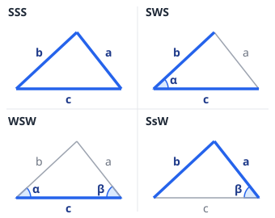
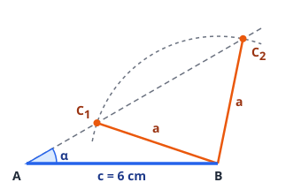

Kongruenzsätze
Mit einem KI-Tutor lernen
Ein KI-Tutor erklärt dir diese Seite und hilft dir bei den Aufgaben. Wähl deinen Assistenten:
Mit Claude öffnen Mit ChatGPT öffnen Mit Mistral Vibe öffnen
Du nutzt dein eigenes Konto beim Anbieter. Der Assistent ist kein Angebot von lernapps.net: lernapps liefert nur Inhalte und Aufgaben. Die Wahl gilt für alle Seiten, nur auf diesem Gerät.
Ziel: Ich kann erkennen, welcher Kongruenzsatz passt und ob das Dreieck eindeutig ist. Du schaust dafür auf die gefärbten Stücke deiner Planfigur.
Probier zuerst
Aufgabe
Lösung
Alle drei Dreiecke sind genau gleich.
Die Winkel sagen nichts über die Länge der Seiten. Eines kann 3 cm lange Seiten haben, ein anderes 8 cm lange.
Die Dreiecke haben dieselbe Form, können aber verschieden groß sein. richtige Antwort
Alle drei sind gleichseitig, aber jeder wählt die Länge der Seiten selbst.
So ein Dreieck gibt es nicht.
60° + 60° + 60° = 180°. Das passt zur Winkelsumme, das Dreieck gibt es.
Drei Winkel legen nur die Form fest. Für die Größe fehlt eine Länge.
Welche drei Stücke reichen?
Zwei Dreiecke heißen kongruent (deckungsgleich), wenn sie genau aufeinanderpassen. Ein Dreieck ist eindeutig, wenn alle, die es nach denselben Angaben konstruieren, kongruente Dreiecke bekommen. Die Aufgabe oben zeigt: Drei Winkel reichen dafür nicht. Die Kongruenzsätze sagen, welche drei Stücke reichen. S steht für Seite, W für Winkel.

Achte darauf, wo der blaue Winkel liegt: zwischen den Seiten, an der Seite oder einer Seite gegenüber. Bei SsW ist b die längere Seite.
Quelle: eigene Zeichnung. Lizenz: CC-BY-4.0.| Satz | gegeben | Beispiel |
|---|---|---|
| SSS | drei Seiten | a, b, c |
| SWS | zwei Seiten und der Winkel dazwischen | b, c, α |
| WSW | eine Seite und die zwei Winkel an ihr | c, α, β |
| SsW | zwei Seiten und der Winkel gegenüber der längeren | a, b, β mit b > a |
Bei SSS müssen die zwei kürzeren Seiten zusammen länger sein als die längste – sonst gibt es gar kein Dreieck. Liegen zwei gegebene Winkel nicht beide an der Seite (manche nennen das SWW), rechnest du den dritten mit der Winkelsumme aus. Dann hast du WSW.
Ein Beispiel
c = 7 cm, α = 50°, γ = 70°
In der Planfigur liegt α bei A, also an c. γ liegt bei C, gegenüber von c. Das ist noch kein Satz aus der Tabelle. Rechne den dritten Winkel aus:
Jetzt liegen α und β an c – das ist WSW. Das Dreieck ist eindeutig.
Groß S und klein s
Merke
Bei SsW liegt der Winkel der längeren Seite (großes S) gegenüber. Liegt er der kürzeren gegenüber, heißt das sSW: Der Zirkelbogen kann den freien Schenkel zweimal schneiden, dann gibt es zwei verschiedene Dreiecke. sSW und WWW sind nicht eindeutig.

Gegeben a = 4 cm, c = 6 cm, α = 30°. α liegt der kürzeren Seite a gegenüber – C1 und C2 passen beide.
Quelle: eigene Zeichnung. Lizenz: CC-BY-4.0.Jetzt du
Aufgabe
Drei Beispielaufgaben, jede mit ihrer Lösung:
Aufgabe Nr. 1
Gegeben sind b = 5 cm, α = 50°, γ = 60°. Welcher Satz passt?
Tipp
Skizziere eine Planfigur und färbe die gegebenen Stücke. Wo liegt jeder gegebene Winkel?
Lösung
- α liegt bei A, γ bei C. Beide liegen an der Seite b = CA.
- Das passt zu WSW.
Richtige Antwort: WSW
Aufgabe Nr. 2
Gegeben sind a = 5 cm, c = 8 cm, α = 35°. Welcher Satz passt?
Tipp
Skizziere eine Planfigur und färbe die gegebenen Stücke. Wo liegt jeder gegebene Winkel?
Lösung
- α liegt a gegenüber, und a ist die kürzere der beiden Seiten.
- Das passt zu sSW.
Richtige Antwort: sSW
Aufgabe Nr. 3
Gegeben sind a = 7 cm, b = 3 cm, c = 5 cm. Welcher Satz passt?
Tipp
Skizziere eine Planfigur und färbe die gegebenen Stücke. Wo liegt jeder gegebene Winkel?
Lösung
- Gegeben sind drei Seiten. 3 cm + 5 cm sind länger als 7 cm, also gibt es das Dreieck.
- Das passt zu SSS.
Richtige Antwort: SSS
Aufgabe
Drei Beispielaufgaben, jede mit ihrer Lösung:
Aufgabe Nr. 1
Gegeben sind a = 5 cm, b = 7 cm, γ = 40°. Ist das Dreieck damit eindeutig festgelegt?
Tipp
Welcher Satz passt? Nur sSW und WWW sind nicht eindeutig.
Lösung
- γ liegt bei C. Dort treffen sich a und b: Der Winkel liegt zwischen den beiden Seiten. Das ist SWS.
- Darum ist das Dreieck eindeutig.
Richtige Antwort: eindeutig
Aufgabe Nr. 2
Gegeben sind b = 8 cm, c = 6 cm, β = 50°. Ist das Dreieck damit eindeutig festgelegt?
Tipp
Welcher Satz passt? Nur sSW und WWW sind nicht eindeutig.
Lösung
- β liegt b gegenüber, und b ist die längere der beiden Seiten. Das ist SsW.
- Darum ist das Dreieck eindeutig.
Richtige Antwort: eindeutig
Aufgabe Nr. 3
Gegeben sind a = 5 cm, c = 8 cm, α = 35°. Ist das Dreieck damit eindeutig festgelegt?
Tipp
Welcher Satz passt? Nur sSW und WWW sind nicht eindeutig.
Lösung
- α liegt a gegenüber, und a ist die kürzere der beiden Seiten. Das ist sSW.
- Darum ist das Dreieck nicht eindeutig.
Richtige Antwort: nicht eindeutig
Aufgabe
Lösung
Richtige Antwort: Die Aussage stimmt nicht.
γ liegt bei C, also der Seite c gegenüber. c ist mit 8 cm die längere Seite: SsW, das Dreieck ist eindeutig.
Aufgabe
Lösung
c = 5 cm, α = 40°, β = 80° richtige Antwort
α und β liegen an c. Das ist WSW, eindeutig.
α = 40°, β = 80°, γ = 60°
Nur Winkel: WWW. Die Größe ist nicht festgelegt.
a = 6 cm, b = 8 cm, γ = 90° richtige Antwort
γ liegt bei C zwischen a und b. Das ist SWS, eindeutig.
a = 3 cm, b = 4 cm, c = 8 cm
3 cm + 4 cm = 7 cm ist kürzer als 8 cm. Die Kreise treffen sich nicht, das Dreieck gibt es nicht.
Prüfe bei jeder Angabe den Satz – und bei drei Seiten, ob die zwei kürzeren zusammen länger sind als die längste.
Aufgabe
Lösung
Ja, zwei Seiten und ein Winkel reichen immer.
Das kommt darauf an, wo der Winkel liegt. Nur SWS und SsW sind eindeutig.
Ja, denn γ liegt der längeren Seite b gegenüber.
γ liegt bei C. Gegenüber von C liegt c, nicht b.
Nein, γ liegt der kürzeren Seite c gegenüber. Es kann zwei Dreiecke geben. richtige Antwort
c ist mit 4 cm kürzer als b. Das ist sSW, nicht eindeutig.
Nein, γ liegt nicht zwischen b und c, also gibt es gar kein Dreieck.
Das Dreieck gibt es – es ist nur nicht eindeutig.
γ liegt c gegenüber, und c ist die kürzere Seite: sSW. Der Zirkelbogen um A mit 4 cm schneidet den freien Schenkel von γ zweimal.
Als Nächstes nutzt du den Satz, um die Schritte einer Konstruktion zu planen.
Fehler gefunden oder eine Idee für diese App?